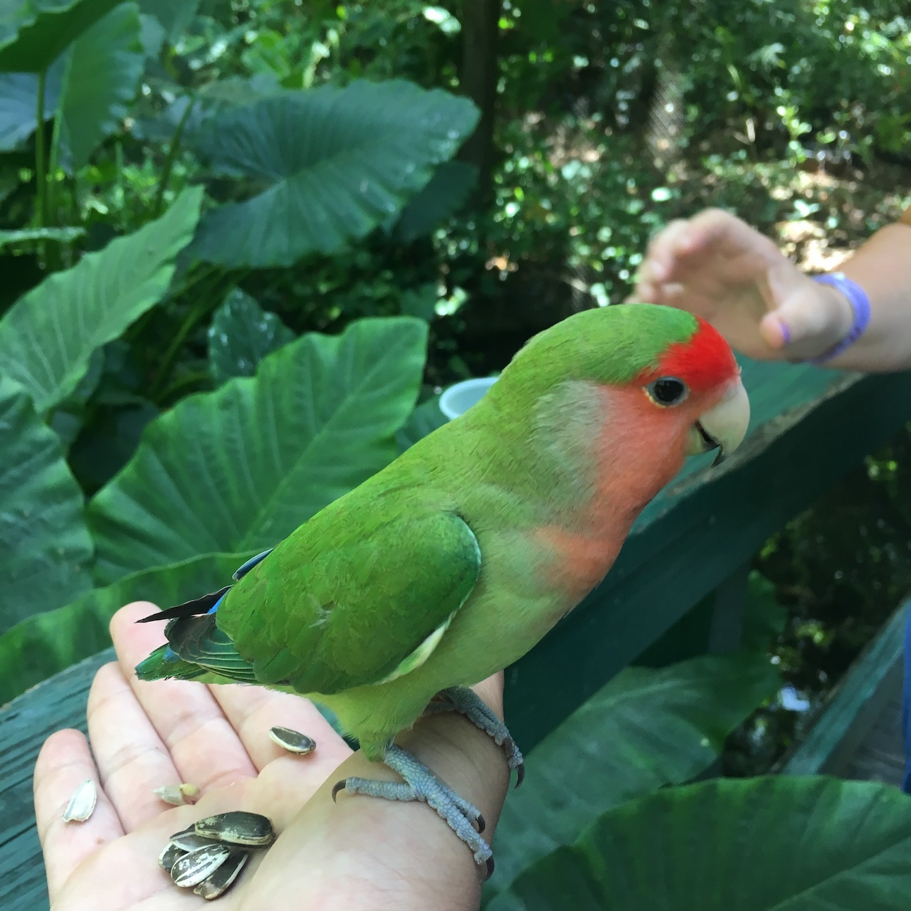
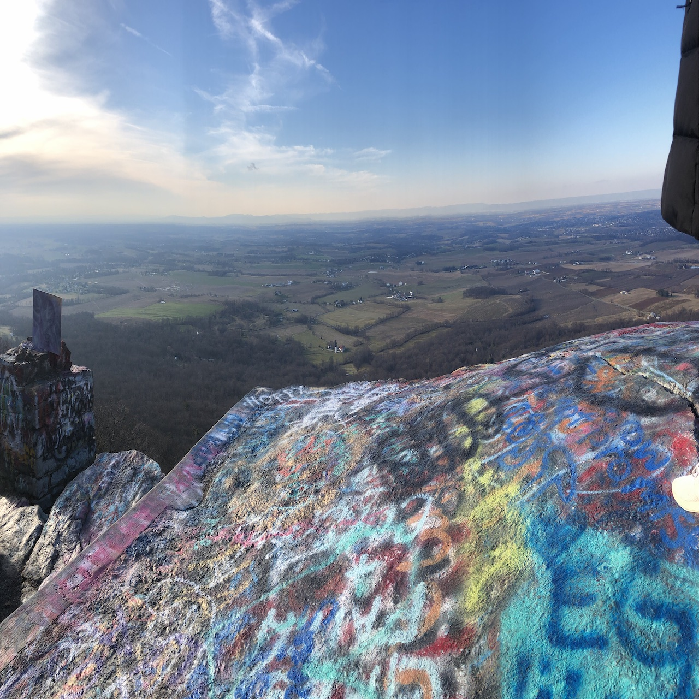
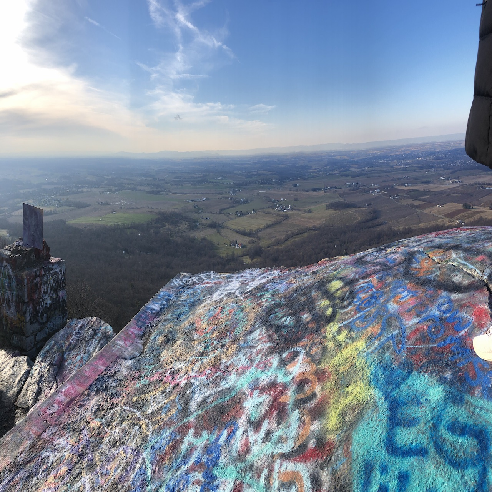
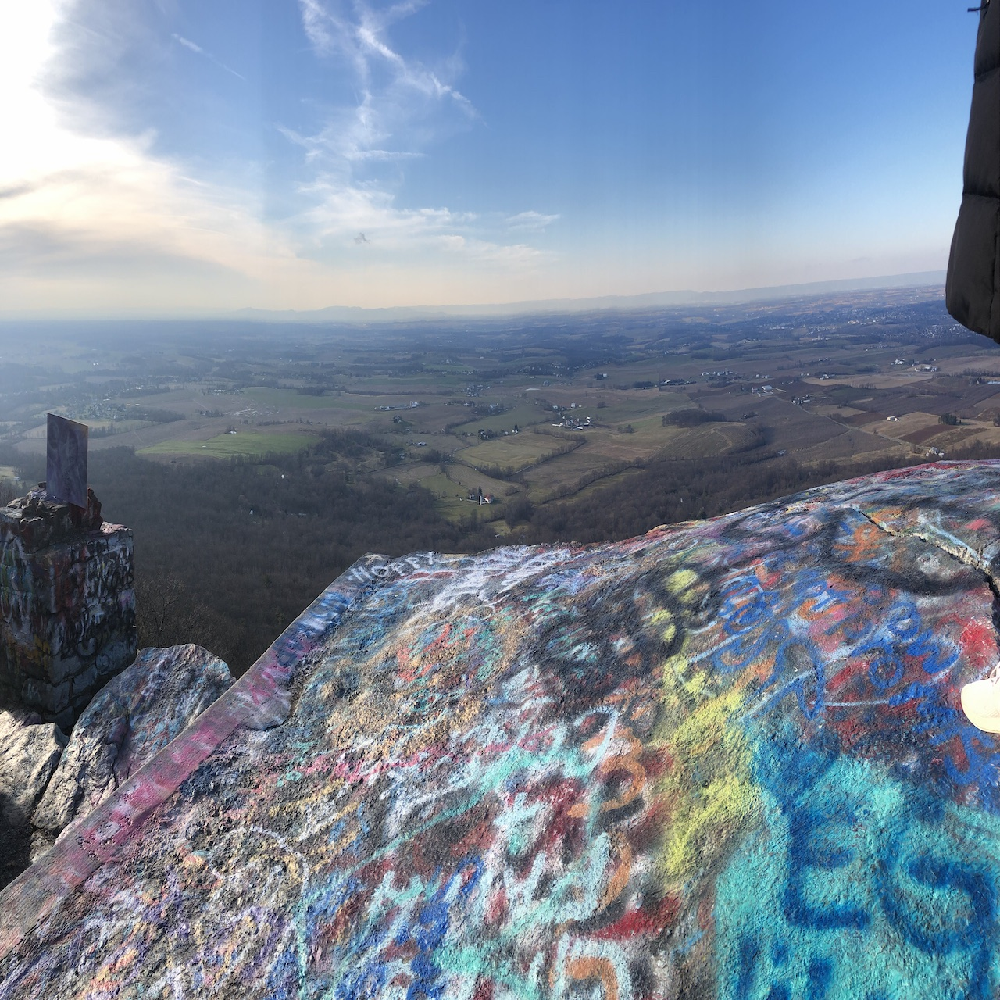

Michael Pulley's Labs For INST 377
Album Names
- Kanye West - My Beautiful Dark Twisted Fantasy
- Kendrick Lamar - good kid, m.A.A.d city
- Drake - Nothing Was the Same
- Post Malone - Stoney
- Chance the Rapper - Coloring Book
Image Carousel

 


There are four different images of mochi presented. The first mochi image is a "gif", the second mochi image is a "jpg", the third mochi image is a "png", and the fourth mochi image is a "svg".